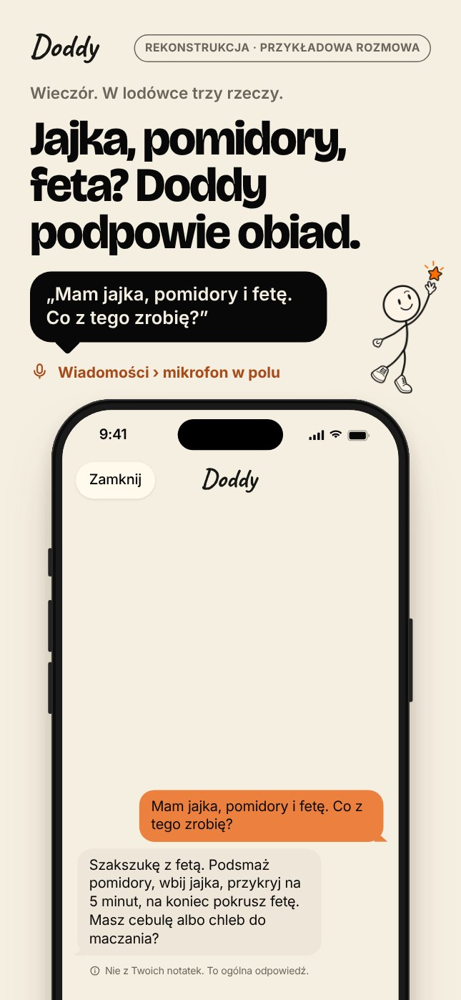
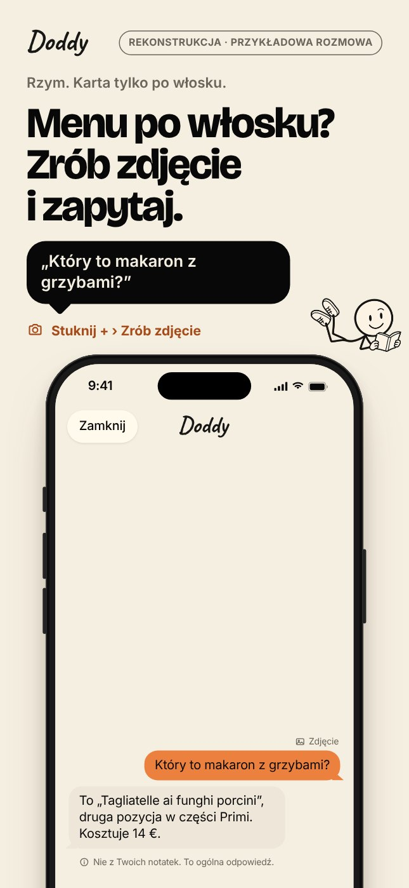
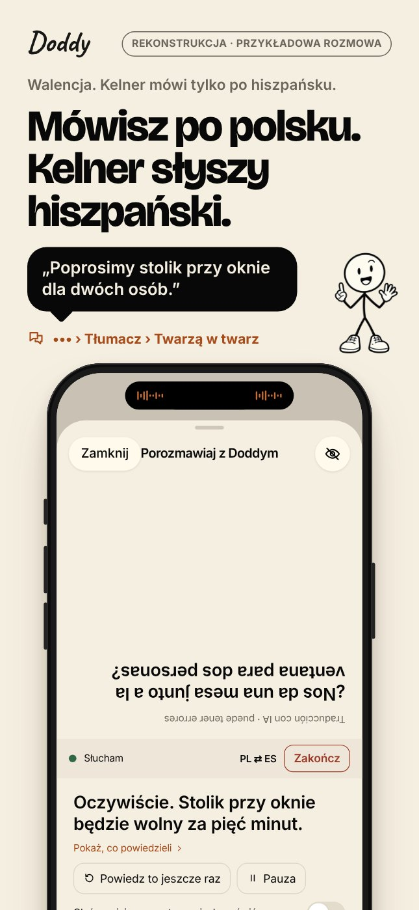
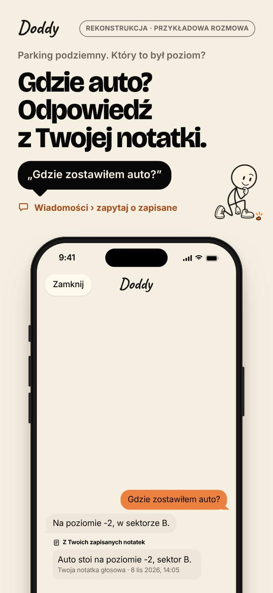
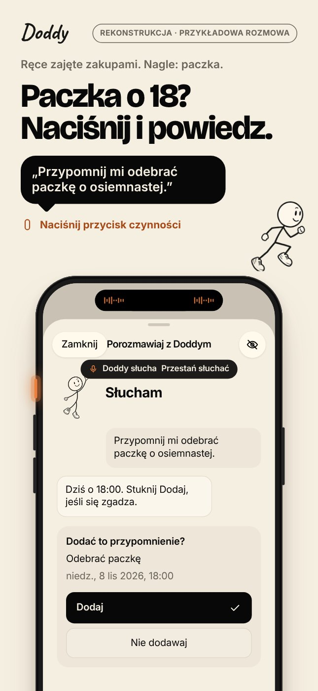
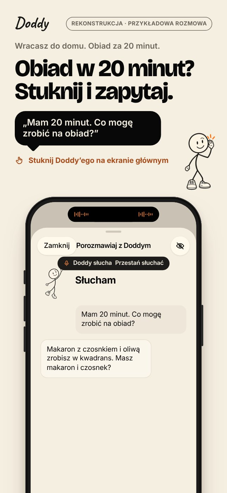
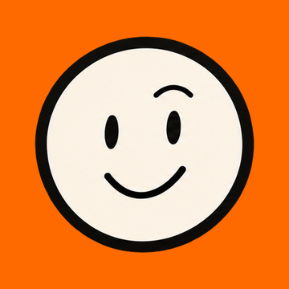

Dużo drobnych spraw
Chce zacząć jednym zdaniem, bez szukania funkcji w menu.
Jak sprawdzić: test pięciu sekund na serii plansz. Czy po pięciu sekundach badany wie, czego dotknąć, żeby zacząć?
Prezentacja w App Store · 8 listopada 2026
Każda plansza pokazuje sytuację, którą znasz z życia, zdanie, które możesz powiedzieć, to, czego dotknąć, i wynik, który widać w aplikacji. Ekrany odtworzyliśmy z kodu i zrzutów z CI, z polskimi napisami samej aplikacji.
To rekonstrukcje i przykładowe rozmowy, a nie zrzuty z telefonu. Przed publikacją każdą trzeba zastąpić autentycznym ujęciem funkcji sprawdzonej na urządzeniu. Przewiń, a każda scena odegra się sama.






6 plansz · 1290 × 2796
Dla kogo
Projektujemy dla osoby, która ma dużo drobnych spraw, czasem zajęte ręce i potrzebuje pomocy w konkretnym momencie. Nikt tego jeszcze nie sprawdził na użytkownikach Doddy’ego, więc przy każdej hipotezie jest sposób, jak ją zbadać.
Chce zacząć jednym zdaniem, bez szukania funkcji w menu.
Jak sprawdzić: test pięciu sekund na serii plansz. Czy po pięciu sekundach badany wie, czego dotknąć, żeby zacząć?
Przycisk czynności i rozmowa w wyspie są dla niej realną drogą, a nie ciekawostką.
Jak sprawdzić: krótka ankieta o modelu iPhone’a (kto w ogóle ma przycisk czynności) i pięć rozmów w sytuacji, np. przy zakupach albo z dzieckiem na ręku.
Bardziej ufa odpowiedzi, gdy widzi, skąd ona pochodzi.
Jak sprawdzić: test preferencji dwóch wersji planszy 3: z notatką pod odpowiedzią i bez niej. Pytamy, której odpowiedzi badany by uwierzył i dlaczego.
Seria do App Store
Na każdej planszy ten sam porządek: sytuacja, nagłówek, zdanie w dymku, czego dotknąć, a niżej telefon z wynikiem. Hasła reklamowe są na papierze, poza ekranem aplikacji. Format 1290 × 2796 (iPhone 6,9″). U góry każdej planszy, obok logotypu, jest oznaczenie „Rekonstrukcja · przykładowa rozmowa”.
2026-11-08-translator-in-beta).
Symulacja
Uproszczona symulacja strony aplikacji i wyników wyszukiwania w App Store, żeby ocenić czytelność plansz w małym rozmiarze. To nie jest strona Apple ani prawdziwy wpis w sklepie.

Plansze przewijają się w bok. Podtytuł mówi, czym Doddy jest; w opisie od pierwszego zdania wiadomo, że to AI.
Tu widać tylko trzy pierwsze plansze, każda szeroka na mniej więcej 115 punktów. Nagłówek musi się dać przeczytać właśnie w tym rozmiarze.
Doddy to postać AI na iPhonie. Stuknij go i powiedz, co masz na głowie, albo napisz w Wiadomościach. Zanim cokolwiek zapisze albo doda do przypomnień, pokaże dokładną treść i poczeka, aż stukniesz.
• Zapisz, gdzie stoi auto, i zapytaj później. Pod odpowiedzią widać notatkę, z której pochodzi.
• Powiedz „Przypomnij mi…”, a Doddy przygotuje przypomnienie do zatwierdzenia.
• Tłumacz rozmowę twarzą w twarz albo zapytaj o zdjęcie karty dań.
Doddy to AI, nie człowiek, i może się pomylić.
Zanim cokolwiek trafi do sklepu
Obecność kodu nie dowodzi, że funkcja działa niezawodnie. Te plansze to projekt układu i treści; prawdziwe ujęcia muszą pochodzić z telefonu.
main na telefonie z kontem głosowym i włączonym „Zapytaj Doddy’ego”, język polski.docs/implementation/ACTION_BUTTON_ISLAND.md, co najmniej przypadki 1, 2, 4, 5, 13 i 16, plus „Pokaż” otwierające kartę.Te napisy były po angielsku w polskiej wersji. Zmiana z 8 listopada dodała ich polskie wersje (razem 163 nowe linie tłumaczeń, w tym napisy z warunków typu „Wstrzymaj/Wznów”), ale nie była jeszcze skompilowana ani oglądana na telefonie. Plansze nadal je pomijają, dopóki prawdziwe zrzuty tego nie potwierdzą.
| Napis w kodzie | Gdzie | Plansza |
|---|---|---|
| Swipe to Controls (Shortcut on iOS 17)…, Pick Talk to Doddy., Under Controls, Talk to Doddy talks in the Dynamic Island… | Przewodnik „Sposoby na otwarcie Doddy’ego” (OpenDoddyWaysView.swift) | 2 |
| If your question is about something you saved, I'll look at the matching notes… | Pusty ekran Wiadomości: zwykły napis, nigdy nie tłumaczony (MessagesView.swift, intro) | 3, 6 |
| Listening · Paused · Hold a button to talk | Pasek tłumacza: zwykłe napisy bez tłumaczenia (TranslatorViews.swift, statusText) | 4 |
| Doddy said to them: %@ · They speak | Tłumacz: Twoja połowa ekranu i arkusz startu | 4 |